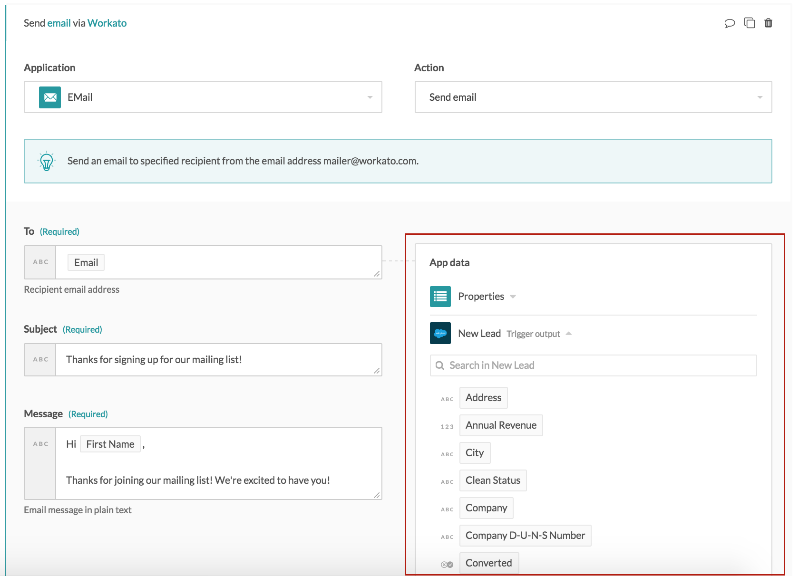
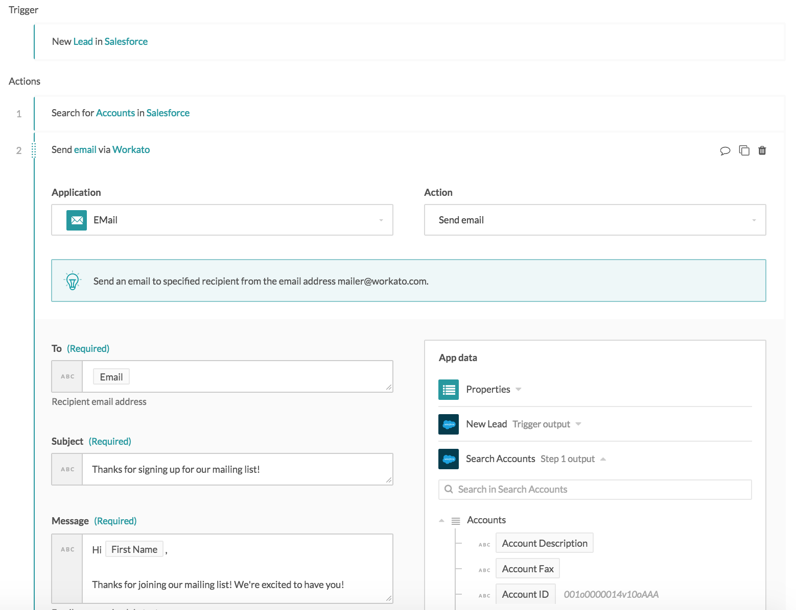
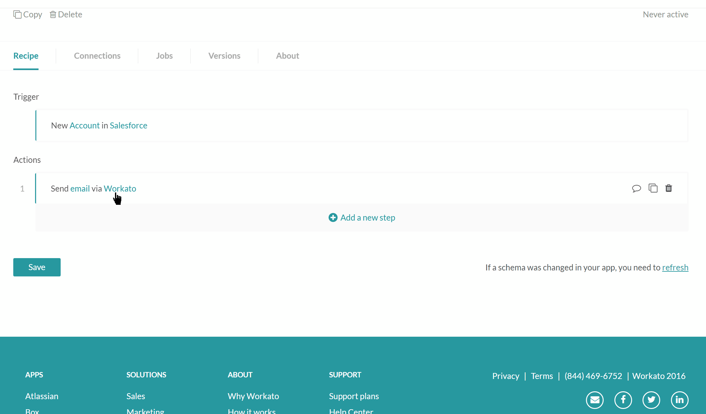
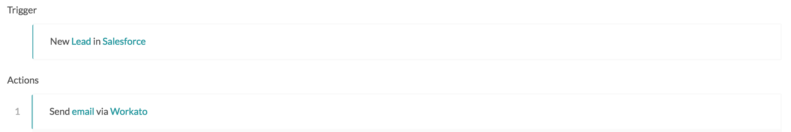
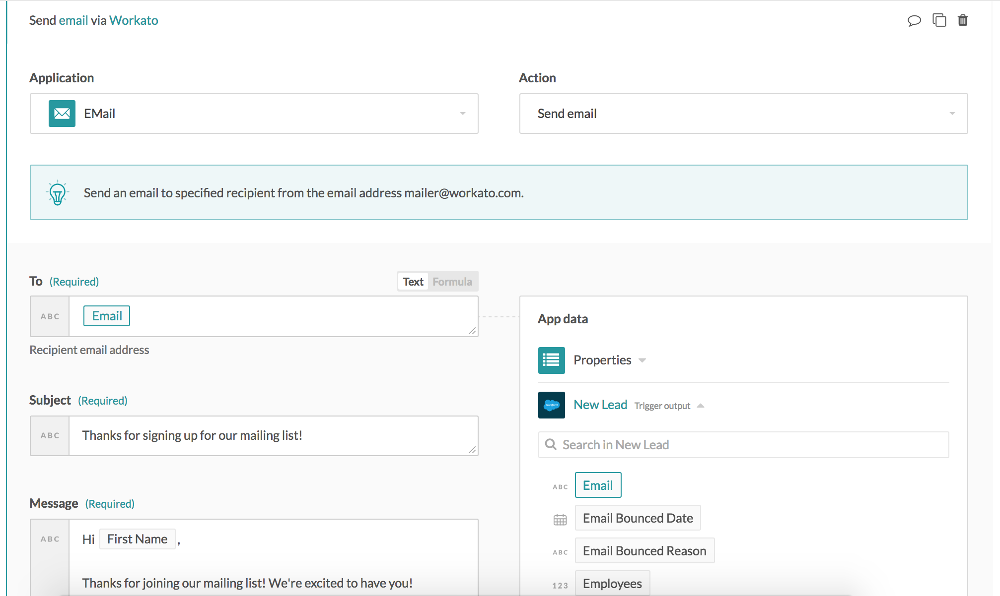

Data pills
Data pills are output data from a trigger or an action step. They are variables that you can use in mapping business logic into recipe steps. e.g. to create an Zendesk organization from a Salesforce account you will assign data pills from Salesforce account to the Zendesk organization action input fields.
Data pills are contained within datatrees, within the App Data section. At an recipe step, the App Data section contains the output from the trigger and every action preceeding this step.
 Datatree within a recipe step
When you're configuring a recipe step, all data from the preceeding steps will be available for use in the fields mapping of that step.
 Multiple datatrees available when configuring a recipe step
Data types
Data pills can be of the following data types
- String
- Integer
- Number
- Date
- Datetime
- Boolean When mapping (i.e. assigning data pill to an input field) it is important that they are 'type' compatible. Workato will do default type conversions where it can be done with no ambioguity or loss of information.
Type conversions
Certain data types can be converted from one to the other using formulas. For example, if you wish to convert a text string of numbers into integer type so as to perform arithmetic on it, or if an app expresses a datetime as a string, but you wish to convert it into a proper datetime type.
The list of available type conversion formulas are as follows:
- to_currency
- to_date
- to_f
- to_i
- to_s
- to_time
Additional type conversions may be added from time to time - you can check out the formula editor to see if there is the formula you're looking for.
Preview data
Workato will display sample data (fetched from your account) alongside data pills to help better understand the data in your app.
In example below, you can see sample data in italics next to the data pills.
 Output datatree for New Salesforce account trigger
Output datatree for New Salesforce account trigger
Fields mapping
Fields mapping is defined as the assignment of data pills (variables) or absolute values (constants) into action or trigger input fields. This controls the flow of data between apps.
By mapping fields from a Salesforce account (from a trigger) to a Zendesk create organization action, you can ensure that the Zendesk organization and Salesforce account have the same data.
In every recipe step, you have access to data pills from all the previous steps' and can be used in configuring input fields of current step. In this way, we're crafting a template that determines data flow in your recipe.
Example
In the following example, we map the Account Name data pill from the Salesforce New account trigger into the Message input field in the Send email action.
 Mapping the account name data pill into the message input field
Mapping constants vs mapping variables
Workato input fields can be assigned variables (data pills) or constants (absolute values).
Mapping variables
The variable Account name has been mapped to the Name input field. This means that for every new Salesforce account that is created, the account name of this Salesforce account will be used as the organization name of the Zendesk organization that will be created. For example, a new Salesforce account named Sattei Winery will in turn create a Zendesk organization named Sattei Winery.
 Input field with variable mapping
Input field with variable mapping
Mapping constants
On the other hand, the input field Notes has a constant mapped to it - the words "Synced over from Salesforce." This means that all newly created Zendesk organizations created via Workato will have the words "Synced over from Salesforce." in its Notes field.
 Input field with constant mapping
Input field with constant mapping
Here's an example of the new Zendesk organization created via the above mapping:
 Newly created Zendesk organization Sattei Winery
Newly created Zendesk organization Sattei Winery
Mapping both constants and variables
You can also combine constants and variables in the input fields for the data you wish to have.
Example
Let's take the scenario where we wish to send out a simple welcome email to every new Salesforce lead who has signed up. The recipe looks like

Recipe that sends a welcome email to new Salesforce leads Example recipe
In the Send email action, pills from the New Salesforce lead datatree have been mapped into the input fields.
 Example of data pills being mapped into an action step
Since pills are variables, their value will depend on a specific trigger event, or action. In this example, the value assigned to the To input field, will depend on the value of email in each new lead. If a new lead called Madison Diaz with the email address madisondiaz82@gmail.com is created, the recipe will pick it up and promptly send an email to the address madisondiaz82@gmail.com with the message:
Hi Madison,
Thanks for joining our mailing list! We're excited to have you!
Data transformation
Data fields from one app may not directly map into a data field for a different apps. For example:
- your sales app stores names in a single field full name, but your marketing app uses two fields first name and last name
- your ecommerce app stores addresses as individual fields, e.g. address line 1, address line 2, city, state, but your accounting app simply requires a single billing address field
- the priority levels in your ticketing app may be low, medium, high, but in your sales system they're low, normal, urgent
In such cases, you can take advantage of Workato's data transformation capabilities by using formulas.
Common issues when mapping fields
Here are some of the common errors we've experienced when it comes to fields mapping
- Data pills with no values at run-time for required fields
At design-time (when we're building the recipe), all required fields are supposed to be mapped. The recipe will refuse to start and throw an error if a required field is left empty.
However, even if an input field has been mapped at design-time, it might not actually have a value at run-time (when a trigger event comes in and a job is being processed). In such a case, that specific job will throw an error and fail.
You would need to decide how to handle such cases whereby a required field might not receive a value at run-time. If that is rightly a business logic error which needs to be resolved, e.g. the recipe tries to move a new lead from a sales app to a marketing app, but finds that it's missing an email address for the lead, the answer might be to let the job fail and flag the employee who had created the lead record.
- Data pills from the wrong datatree
When mapping input fields with data pills, it is common to find pills with the same names in the datatrees, e.g. if you're moving customers from an app to another, customer datatrees tend to hold address information. Hence you might find yourself using a pill with the right name, e.g. City, State, Country, but from the wrong datatree.
- Data pills from the wrong part of the recipe If your recipe has conditional steps, e.g. if customer is present, update customer record, and if customer is not present, create customer record, then for each job that's processed, there will be steps that are not carried out. In such cases, the values in the datatree for these steps will most likely be blank.
If you're using data pills from these steps, you need to recognize the potential of these pills being null, and handle that scenario.